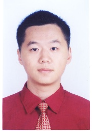

|  | Kenny Qili ZHU 35 Olden Street Princeton, NJ 08544 (425) 442-5480 (Mobile) (609) 258-5388(Office) Email: kzhu@cs[dot]princeton[dot]edu URL: http://www.cs.princeton.edu/~kzhu/ |
| CURRENT APPOINTMENT | Postdoctoral Researcher Department of Computer Science Princeton University Princeton, NJ 08544 |
|
| EDUCATION | ||
| 1999-2005 |
Ph.D in Computer Science National University of Singapore, Department of Computer Science Thesis title: Open Constraint Programming Advisors: Professor Joxan Jaffar and Associate Professor Roland H. C. Yap |
|
| 1995-1999 |
B.E. in Computer Engineering (Honors) National University of Singapore, Department of Electrical engineering Thesis title: Heuristic Methods for Vehicle Routing Problems with Time Windows Advisors: Dr. Kay-Chen Tan and Dr. Loo-Hay Lee |
|
| SELECTED PUBLICATIONS |
Refereed Conference Publications Kenny Q. Zhu, Daniel S. Dantas, Kathleen Fisher, Limin Jia, Yitzhak Mandelbaum, Vivek Pai and David Walker. Language Support for Processing Distributed Ad Hoc Data. In the Proceedings of 11th International ACM SIGPLAN Symposium on Principles and Practice of Declarative Programming, PPDP 2009. Qian Xi, Kathleen Fisher, David Walker and Kenny Q. Zhu. Ad Hoc Data and the Token Ambiguity Problem. In Proceedings of 11th International Symposium on Practical Aspects of Declarative Languages, PADL 2009. Kathleen Fisher, David Walker and Kenny Q. Zhu. LearnPADS: Automatic Tool Generation From Ad Hoc Data. In Proceedings of ACM SIGMOD 2008, pp 1299--1302. Kathleen Fisher, David Walker, Kenny Q. Zhu and Peter White. From Dirt to Shovels: Fully Automatic Tool Generation From Ad Hoc Data. In Proceedings of ACM POPL 2008, pp 421-434. Joxan Jaffar, Roland H.C. Yap and Kenny Q. Zhu. Generalized Committed Choice. In Proceedings of the 9th International Conference on Coordination Models and Languages, COORDINATION 2007. Joxan Jaffar, Roland H.C. Yap and Kenny Q. Zhu. Indexing of Dynamic Abstract Regions. In Proceedings of the 22nd International Conference on Data Engineering, ICDE 2006. Joxan Jaffar, Roland H.C. Yap and Kenny Q. Zhu. Coordination of Many Agents. In Proceedings of the 2lst International Conference on Logic Programming, ICLP 2005. Joxan Jaffar, Andrew E. Santosa, Roland H.C. Yap and Kenny Q. Zhu. Scalable Distributed Depth-First Search with Greedy Work Stealing. 16th Intl Conf on Tools with Artificial Intelligence, Boca Raton, (ICTAI 2004). pp. 98--103.. Kenny Q. Zhu and Ziwei Liu. Population Diversity in Permutation-Based Genetic Algorithm. In the Proceedings of European Conference on Machine Learning (ECML 2004), pp. 537--547. Kenny Q. Zhu and Ziwei Liu. Empirical Study of Population Diversity in Permutation-Based Genetic Algorithm. Proceedings of Genetic and Evolutionary Computation Conference, GECCO 2004 (2), pp. 420-421. Kenny Q. Zhu. A Diversity-controlling Adaptive Genetic Algorithm for the Vehicle Routing Problem with Time Windows. Proceedings of 15th IEEE International Conference on Tools for Artificial Intelligence, ICTAI 2003, pp. 176-183. Kenny Q. Zhu and Andrew E. Santosa. A Web Meeting Scheduling System Based on Open Constraint Programming. International Conference of Advance Informations System Engineering, CAiSE'02, pp. 792-795. Kenny Q. Zhu, Wee-Yeh Tan, Andrew Santosa and Roland Yap. Reactive Web Agents with OCP. Proceedings of International Symposium of Autonomous Decentralized Systems, ISADS 2001, Dallas, Texas, pp. 251-254. Kenny Q. Zhu, Kar-Loon Ong. A Reactive Method for Real Time Dynamic Vehicle Routing Problems. Proceedings of the 12th IEEE International Conference on Tools for Artificial Intelligence, ICTAI 2000, Vancouver, Canada, pp. 176-180. K.C. Tan, L.H. Lee and Kenny Q. Zhu. Heuristics for VRPTW. 6th International Symposium on Artificial Intelligence and Mathematics, AMAI 2000. Refereed Journal Publications Kathleen Fisher, David Walker, Kenny Q. Zhu and Peter White. From Dirt to Shovels: Fully Automatic Tool Generation From Ad Hoc Data. ACM SIGPLAN Notices. Volume 43, Issue 1, pp 421-434. K. C. Tan, L. H. Lee, K. Q. Zhu and K. Ou. Heuristic methods for vehicle routing problem with time windows. Artificial Intelligent in Engineering (2001) pp. 281-295. Other Articles David Burke, Kathleen Fisher, David Walker, Peter White and Kenny Q. Zhu. Towards 1-click tool generation with PADS. ICML workshop on Challenges and Applications of Grammar Induction, 2007. Kenny Q. Zhu. Open Constraint Programming. Ph.D Dissertation. Kenny Q. Zhu. Heuristics Methods for Vehicle Routing Problem with time Windows. B. Eng Thesis. |
|
| TALKS & PRESENTATIONS |
"LearnPADS: Automatic format inference from ad-hoc data", demo at SIGMOD 2008. "PADS: A Language and System for Processing Ad Hoc Data", invited talk at PL/Compiler visit day, Princeton University. 03/08/2008. "From dirt to shovels: automatic tool generation from ad hoc data", invited talk at IBM TJ Watson Research. 02/25/2008. "From dirt to shovels: automatic tool generation from ad hoc data", POPL 2008, San Francisco, CA. "From dirt to shovels", System lunch talk at Princeton CS department. 11/2007. (part1) and (part2 by David Walker) "Generalized Committed Choice", Coordination 2007. "Indexing of dynamic abstract regions", ICDE 2006. "Open constraint programming", invited talk at Singapore Management University. "Open constraint programming", PhD. defense talk. "Coordination of many agents", ICLP 2005. "Distributed DFS with greedy work stealing", ICTAI 2004. "Population diversity in permutation-based genetic algorithm", ECML 2004. "Empirical study of population diversity in permutation-based genetic algorithm", GECCO 2004. "A Diversity-controlling Adaptive GA for the VRP with Time Windows", ICTAI 2003. "A Meeting Scheduling System Based on Open Constraint Programming", CAiSE 2002. "Reactive Web Agents with OCP", the Fifth International Symposium on Autonomous Decentralized Systems (ISADS 2001). |
|
| TEACHING EXPERIENCE |
Princeton COS441 Programming Languages (TA, Lecturer) NUS CS5223 Distributed Systems (TA) NUS CS3211 Parallel and Concurrent Programming (Tutor) NUS CS3212 Programming Languages (Tutor) NUS CS2271 Embedded Systems (TA) NUS CS1305 Problem Solving for Computing (Tutor) NUS IT1001 Introduction to Computing (Tutor) |
|
| EMPLOYMENT HISTORY |
||
| 01/2007- |
Postdoctoral Researcher and Lecturer Computer Science Department, Princeton University Programming language and tools for ad hoc data processing Joint work with David Walker from Princeton and Kathleen Fisher from AT&T Labs Research |
|
| 10/2005-01/2007 |
Software Design Engineer Microsoft Corp, Identity Services Work on the design and development of the MSN Passport (also known as the Windows Live ID), a secure user credential and profile management system for all MSN and Windows Live users |
|
| 07/2005-12/2005 |
Research Fellow Dept. Computer Science, National University of Singapore On leave from 10/01/2005 Independent research primarily on speculative reaction |
|
| 2001-2005 |
Teaching Assistant Dept. Computer Science, National University of Singapore Taught in tutorials, labs, relief lectures and consultations |
|
| 1999-2001 |
Research Assistant Dept. Computer Science, National University of Singapore |
|
| 1998 |
Intern Hewlett Packard Singapore, Department of Physical Distribution and Supply Chain. Worked on Vehicle Routing Problem for HP distribution |
|
| PROFESSIONAL SERVICES |
External reviewer for: IEEE Transactions on Vehicular Technology Artificial Intelligence in Engineering International Conference on Principles and Practice of Constraints Programming, CP, 2003, 2006, 2007 International Conference on Logic Programming, ICLP 2006 |
|
| AWARDS AND HONORS |
2004-2005 School of Computing Dean's Graduate Award. 2nd prize in SPH AsiaOne Inter-school Homepage Design Contest. Represented Faculty of Engineering, National University of Singapore to the 1st Undergraduate Research Opportunity Program Conference in Singapore, 1996. Dr. Goh Keng Swee Scholarship. One of the four GKS scholars of that year. Singapore MOE scholarship (tuition plus S$6000 annual allowance) Shanghai Jiaotong University Full Fellowship plus 2,000 RMB annual allowance Admission to Shanghai Jiaotong University exempted from entrance examination Second prize in National Physics Olympiad Competition Third prize in National Math Olympiad Competition in China National Special Award for the wood-carving "The Harvest" |